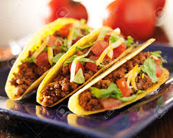

Tacos
List of ingredients :
| Olive oil | 100 grm |
| Onion | 1 medium |
| Garlic | 1 med-chopped |
| Corn tortilas | 4 med-Large |
| Chile Powder | 50 grm |
Packaged corn tortillas vary in quality. Look for a thick tortilla, it will hold up better in the cooking. Otherwise, if your tortillas are more fragile, you may need to double them up - 2 per taco.
- Heat a tablespoon or two of oil in a large sauté pan on medium high heat. Add the zucchini, onions, garlic, green chiles, and jalapeño to the pan. Sprinkle with salt and cumin. Stir to coat the vegetables with the oil in the pan. Spread the veggies out in the pan and then stir only occasionally, until they are all lightly browned. Stir in the chopped tomatoes and oregano, lower the heat to low. Let gently cook for several minutes while you are preparing the tortillas.
- You are going to want to heat up the tortillas first, first to soften them, and then to melt the cheese. There are two basic ways of doing this. One way is on the stove top, preferably in a cast iron pan. Another way is to use the microwave. In both methods you will work in batches. (A third way is to use fresh homemade corn tortillas, which is a great option if you are set up for it.)
- Heat a dollop of olive oil (or other vegetable oil) in a large cast iron frying pan, on medium high. Add a tortilla to the pan, moving it around a bit, and turning it over, so that it spreads around the oil. Let the tortilla heat until it develops little bubbles of air pockets. Then place a piece of cheese on one side of the tortilla, and use a metal spatula to fold the other side of the tortilla over the cheese. Heat until cheese is melted, then remove from pan. Note that if you have a big enough pan, you can have one tortilla folded over while you have another tortilla doing its initial heating.
- Open the tacos and spoon some of the cooked veggie filling into them. Sprinkle on chopped cilantro and crumbled cotija cheese. Serve immediately.